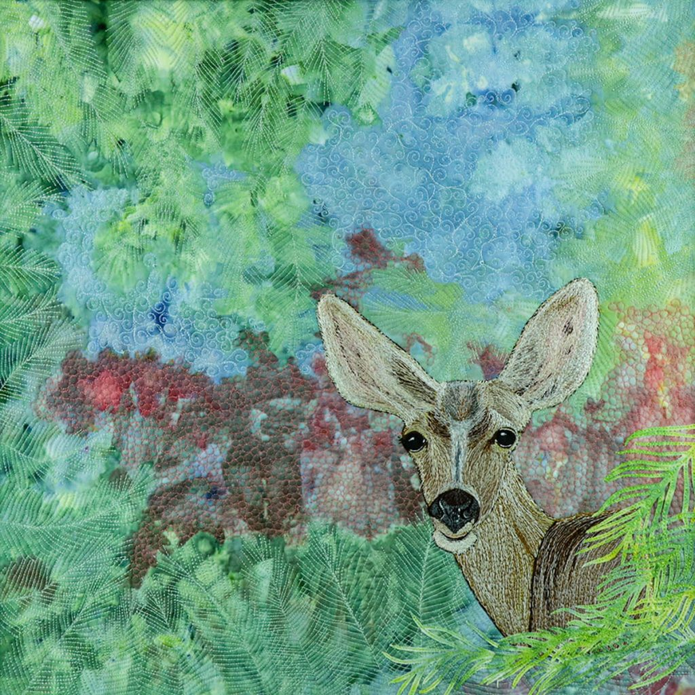

Shawn Delker
Art that Preserves the Beauty of the Ordinary
My artwork preserves the essence of my summer garden on fabric and paper to celebrate the everyday beauty of nature in the Kansas landscape. I use a wildlife camera to photograph the birds and animals that visit my garden, and I use those photos as a reference to stitch the creature using thread and my own guiding hands, much like a painter uses a brush and paint. You might say my sewing machine is my brush and thread is my paint. Just as each animal is different, each of my art pieces is unique because it is totally hand done.
Welcome to my website! Learn more about me, my artwork, and my techniques in the sections below.

About Me
Shawn Marie Delker is a dedicated fiber artist who began sewing at the age of five, mentored by her mother. She started quilting in 2000 and quickly developed an interest in art quilting. Although primarily self-taught, Shawn has further refined her skills through studies with several internationally recognized fiber artists.
Shawn’s present body of work is executed exclusively in thread. She has established distinct techniques and a signature style to achieve her hand-guided machine embroidery art, which she creates on heavily stabilized fabric.
Shawn’s art has been juried into galleries in Topeka, Omaha and Albuquerque, and she is a frequent exhibitor at many local galleries. She received the third-place prize at the 2017 Fiber Arts Fiesta in Albuquerque, New Mexico, and more recently she won First Place in “Kansas Through the Eyes of an Artist” at the Carriage Factory Gallery in Newton, Kansas in 2024 and Best of Show in the NOTO Fiber Arts Passion’s Exhibition in Topeka in 2024, and People’s Choice at NOTO Music and Memory show in 2025. Her experiences include being featured as the Artist in Residence at the Red Barn Studio in Lindsborg and her 2025 solo show at the Vernon Filley Art Gallery in Pratt, Kansas. Her art can be found for sale at the SNW gallery in Manhattan Kansas, in the gift shop at the Salina Art Center, and at the Vernon Filley Art Museum in Pratt.
Shawn is also an instructor at Salina Art Center, where she teaches art classes for both adults and children. She currently teaches macrame, collage, hand sewing, and bookbinding, and she continues to expand her skills through ongoing learning.
Explore My Artwork
I’m pleased to share photos of some of my recent work. Click on the photos for more details!
News
Here are current and upcoming events and places where you can see my work.
Salina Art Center, Salina
I invite you to see some of my latest work for sale at the Salina Art Center Gift Shop, 242 S. Santa Fe Ave., Salina, KS.
Vernon Filley Art Museum, Pratt
I was sad to see my exhibit at the Vernon Filley Art Museum come to an end, as the Museum staff and the people of Pratt were so supportive and friendly! I am pleased that some of my smaller works remain there for sale in their gift shop at 421 S. Jackson in Pratt, KS.
SNW Gallery, Manhattan
I’m showing some of my latest work at the SNW Gallery, 328 Poyntz Avenue, in downtown Manhattan, KS.
Frequently Asked Questions
What is Botanical Printing?
Botanical printing is a process by which plant colors and shapes are transferred to fabric or paper, typically by applying heat and pressure.
Botanical printing, step-by-step:
- Apply the appropriate liquid mordant to the fabric or paper. (A mordant helps the material to accept the color of the plants).
- Place fabric on a Teflon sheet on top of a layer of wet felt.
- Dip plants in ferrous sulfate solution to enhance the color.
- Arrange plants on fabric.
- Cover plants with a second layer of wet felt and another Teflon sheet.
- Place this stack on the preheated heat press and press for 4 minutes. Note: This process is dependent on the time of year and the type of plants.
- Remove stack from heat press.
- Peel plant material from fabric.
Admire the results!
What is Thread Painting?
Thread painting is hand guiding fabric through a sewing machine to apply color and texture, using thread to “paint” a design.
Supplies and equipment needed for thread painting:
- Select a good-quality photograph.
- Print a color photograph to serve as a color reference.
- Print a black-and-white photo the actual size you wish to thread paint.
- Trace the main details of the black-and-white photo very carefully, making a “cartoon” drawing.
- Transfer the cartoon drawing onto fabric using a light box.
- Stabilize the fabric by fusing it onto buckram and felt.
Setting up the sewing machine:
- Prepare the sewing machine by putting in a #90 needle, installing the embroidery foot, lowering the feed dogs, disengaging the foot pedal, setting the machine on a slow speed, and putting 60 weight thread in the bobbin.
- Use 40 weight machine embroidery thread to add color to the design, using the color photo as a reference. You may use a straight stitch or a zig-zag stitch.
Here is where the magic happens:
- When thread painting birds or animals, I usually start with the eye and work out from there. I stitch in the direction of the fur or feathers with darker colors first to establish the shadows. Vary the length of the stitches by moving the fabric faster or slower; this can mimic fur especially well.
- Stitch in the remaining colors, adding the highlights last.
- Several layers of thread help establish a blend of color needed for a more lifelike look. Keep adding layers of thread until the design is complete.
Contact Me
Send me an email using the form, or see me on Facebook!